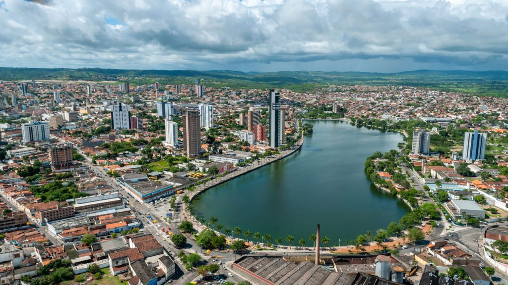

Sobre a Plataforma
O projeto Cidades Sustentáveis nasceu com o propósito de promover a cidadania ativa e facilitar a comunicação entre moradores e autoridades públicas. Acreditamos que uma cidade mais inteligente e inclusiva começa com a participação de todos.
Por meio da plataforma InfraUrbana Conecta, cidadãos podem reportar problemas de infraestrutura urbana, como buracos, iluminação precária ou coleta de lixo ineficiente, com facilidade e transparência.
Missão
Conectar cidadãos e poder público para construir cidades mais humanas, eficientes e sustentáveis.
Visão
Ser a principal referência em tecnologia cívica no Brasil, transformando a maneira como problemas urbanos são identificados e resolvidos.
Valores
- Transparência
- Inovação social
- Participação cidadã
- Compromisso com o bem-estar urbano